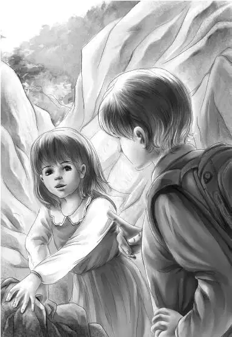

The Alden family did not get up very early next morning. But when they walked into the dining room they had a surprise. There sat John Carter at a large round table for seven.
“Oh，I’m glad you found us！” shouted Benny.
“I never lost you，” said John Carter，getting up. He pulled chairs out for Jessie and Violet and soon they were all chattering at once.
“I thought you might like to see this paper，” Mr. Carter said. He unfolded a newspaper to show a headline that read “Rescued by Helicopter.”
“Here we are！” Benny said.“And it tells about the rockslide and the hole in Old Flat Top and everything.”
“That’s right，” Mr. Carter said.“How does it feel to read about yourselves in the paper？”
Jessie was looking around at the table，“Who is the seventh place for？” she asked.
Mr. Alden and Mr. Carter looked at each other.
“Then he got here last night？” Mr. Alden asked. “He is not one to waste time.”
“Who got here？” Benny asked.
“I’ll make a guess，” Henry said.“Dr. Osgood？”
“If it is Dr. Osgood—and I’m not saying it is—how do you think he’ll look？” asked Grandfather.
Jessie answered，“Oh，I guess he is a tall，large man. He must be strong to climb all these high mountains.”
“Yes，that’s right，” said Mr. Carter.“He must be a very strong man.”
Benny said，“If a big tall strong man should come in that door，I should say it would be Dr. Percy Osgood.”
Mr. Alden said，“Better order your breakfast，and not keep the waiter waiting！”
Everyone ordered bacon and eggs and toast and orange juice and milk. Grandfather and Mr. Carter had coffee.
They were all busily eating when the door opened. They looked up. There stood a small man not much taller than Benny or Violet. His hair was pure white and his eyes very sharp and blue. His glasses were pushed up on his forehead. He was surely not young， but he walked quickly over to Grandfather to shake hands.
“Good to see you again，” said Grandfather.“You came soon. My grandchildren can hardly wait.”
“That’s the way I feel，” said Dr. Osgood，looking at each one in turn.“I would start working without eating any breakfast，only I have learned to eat when I can. One doesn’t get so tired.”
He sat down and ordered the same breakfast as the rest.
Benny asked，“Have you made any plans about what you will do first，Dr. Osgood？”
“Oh，yes！I made them on the train as I came here. A cave isn’t usually so high on a mountain as this one. We have to build a staging first. The staging has to be strong to hold the workmen and the machines. It will take three days at least to make that.”
“Three days！” cried Benny.
“You’ll find，young man，that three days will go by just like that！” He snapped his fingers.“Making a staging is interesting. If you feel like climbing the mountain again，you can all sit below and watch the work.”
“Oh，yes，we’d like that，” said Jessie.“I was afraid we wouldn’t see anything.”
“Well，” said Dr. Osgood with a twinkle，“what would be the good of that？The very people who found the cave not watching the workmen！No，sir！Not possible！”
“I’ll drive you over after breakfast，” said Henry. “Whenever you say.”
“Thank you，” said Dr. Osgood.“I accept.”
As they left the table，Grandfather said，“By the way，Percy，I have a story about the hole in Flat Top that I’d like to tell you. Why don’t you stop in my room？”
Dr. Osgood’s eyebrows shot up. But all he said was， “Do I smell a bit of a mystery？Now let me see. Is it pirate gold or an Indian grave？”
“Well，those guesses are good. But I would rather talk where we are alone. This just might be important to someone.”
In about half an hour the Aldens and Dr. Osgood were getting into the station wagon. When they arrived at the loghouse store，there was quite a crowd of men and women and children standing around.
The ranger said to Dr. Osgood，“Two of your men have already gone up the trail. Do you want me to go first and show you the way？”
“Thank you，no，” said Dr. Osgood.“I think I can find my way. I’m sure it will be full of rocks brought down by the landslide. You Aldens follow me！”
The Aldens went up the trail after the spry little man，but they could not see him.
Mr. Alden said，“Now it takes three hours to get to the top. We’d better not hurry. We’re not used to it. I’ll go first，then Violet. That will slow you down，I guess.”
“That’s OK，” said Benny.

But it was not Mr. Alden and Violet who slowed them down. It was the rocks. Many of them had come down with the landslide. As Henry climbed over a rock he cried，“See how different some of these rocks are？Some are sharp，just broken off the day we came down. But look at those huge ones，perfectly smooth！I’m sure those were left here by a glacier.”
“Right，” said Grandfather.“This is a fine place to study rocks.”
As they climbed slowly，Henry turned around and said to Jessie，“Did you notice that crowd at the store？”
“I certainly did，” said Jessie.“I suppose they came to see the excitement.”
Henry asked in a low voice，“Did you see what I saw？An Indian boy？”
“Yes，I did. He didn’t look very happy，did he？And when I looked at him，he turned around and hid behind another man.”
There was a pause while they climbed further. Then Jessie said，“I thought the ranger said Lovan was the only Indian around here.”
“That’s what I thought，too，” said Henry.